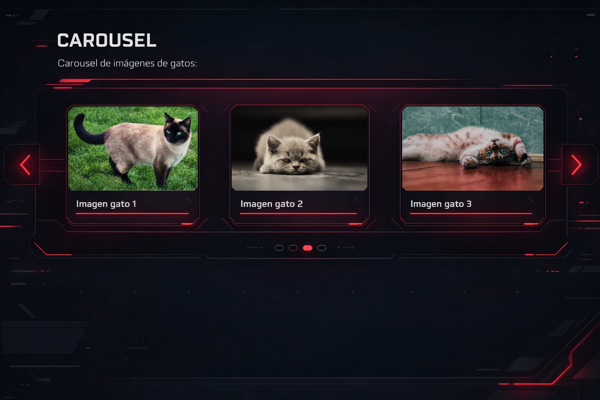
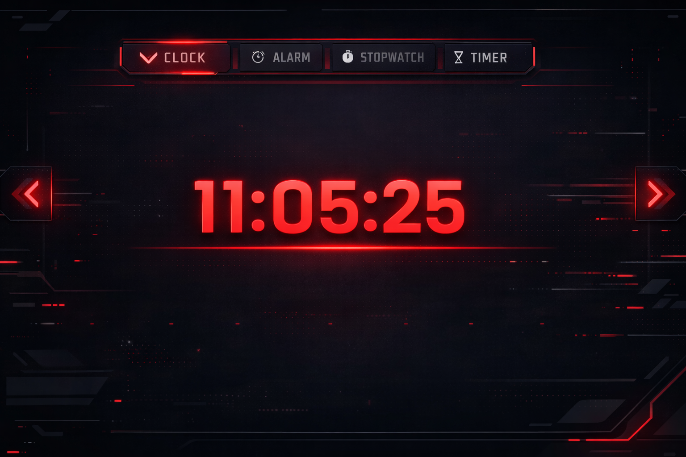
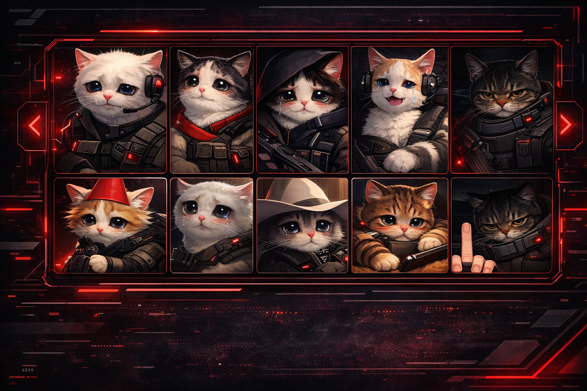

Agent Info
Frontend developer en formación especializada en diseño de interfaces.
Me dedico al diseño y desarrollo de interfaces web modernas, responsive y centradas en la experiencia de usuario, cuidando tanto la parte visual como la funcional.
Busco seguir aprendiendo y evolucionando como desarrolladora frontend, aportando creatividad, orden y atención al detalle en cada proyecto.
Portfolio

Carousel UI
Diseño de un carousel accesible y usable, centrado en la experiencia de usuario.
Ver proyecto
Clock App
Interfaz interactiva tipo reloj con diseño responsive y animaciones.
Ver proyecto
Flexbox Layout
Maquetación responsive utilizando Flexbox y buenas prácticas CSS.
Ver proyectoLoadout
Estudiante de Desarrollo de Aplicaciones Web con interés en diseño web y desarrollo frontend.
Training
- CFGS Desarrollo de Aplicaciones Web (DAW) – En curso
Skills
- HTML5 y CSS3
- Diseño responsive
- JavaScript básico
- Git y GitHub